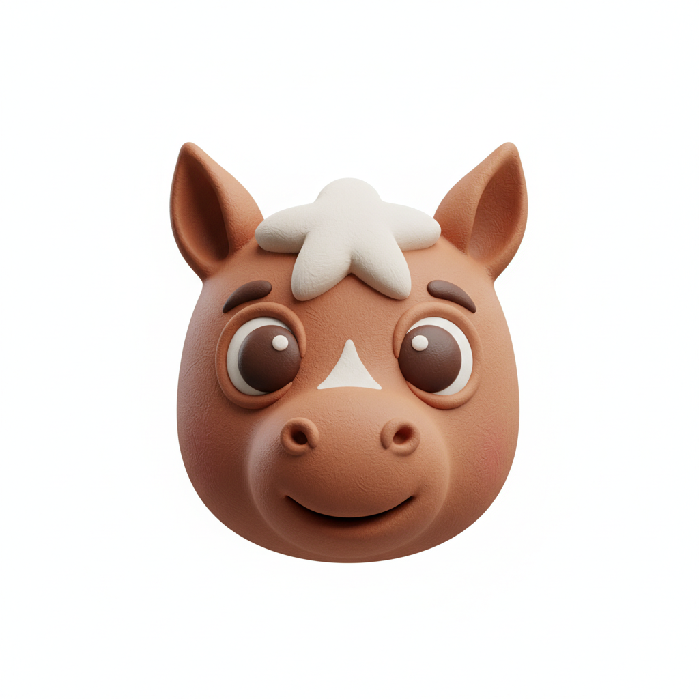
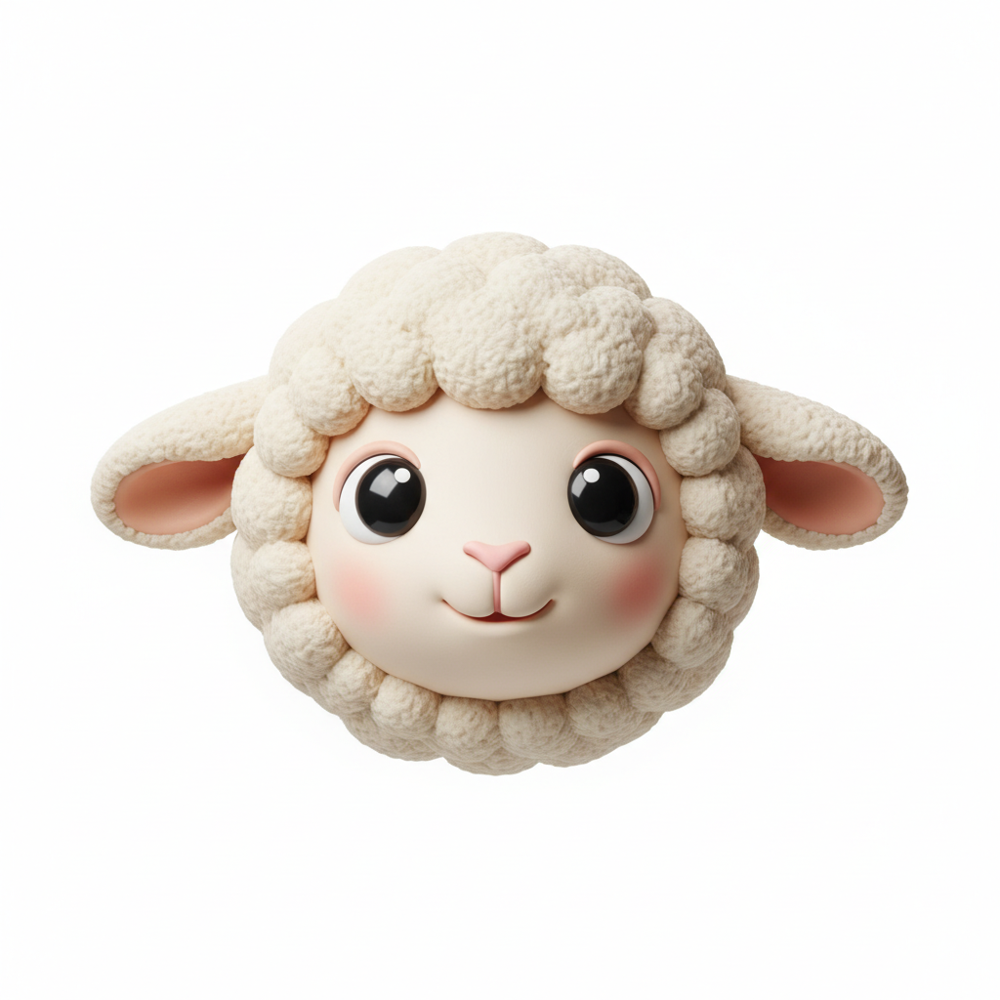
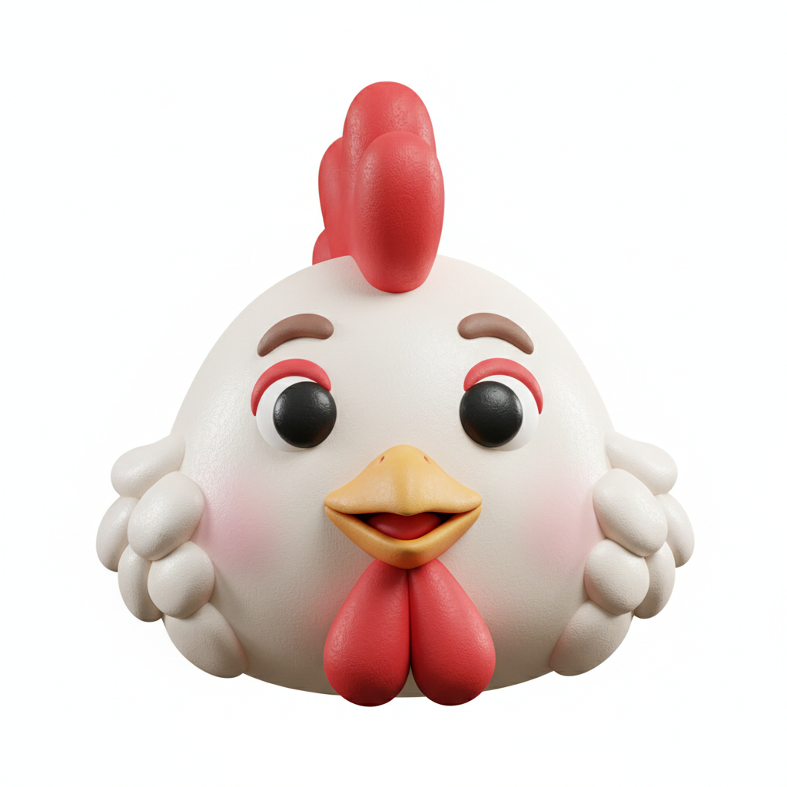

정통사주
당신의 사주를
당신의 사주를
입력해주세요
생년월일과 출생 시간만 있으면
나만의 사주 해석이 시작됩니다.
사주 정보 입력
정확한 사주 분석을 위해 아래 정보를 입력해주세요.
- 양력과 음력 중 어떤 기준인지 먼저 확인한 뒤 입력해 주세요.
- 출생 시간을 모르셔도 시간 미상 여부를 선택해 진행하실 수 있습니다.
- 출생 시간까지 입력하시면 사주 해석 결과를 더 풍부하게 받아보실 수 있습니다.
출생 시간을 모르시나요?
시간 미상
출생 연도를 선택하면 띠가 자동으로 표시됩니다
예: 2000년 → 용띠
쥐
소
 호랑이
호랑이토끼
용
뱀

말
양원숭이

닭개
돼지
🔒 입력된 정보는 사주 분석 목적으로만 사용됩니다.